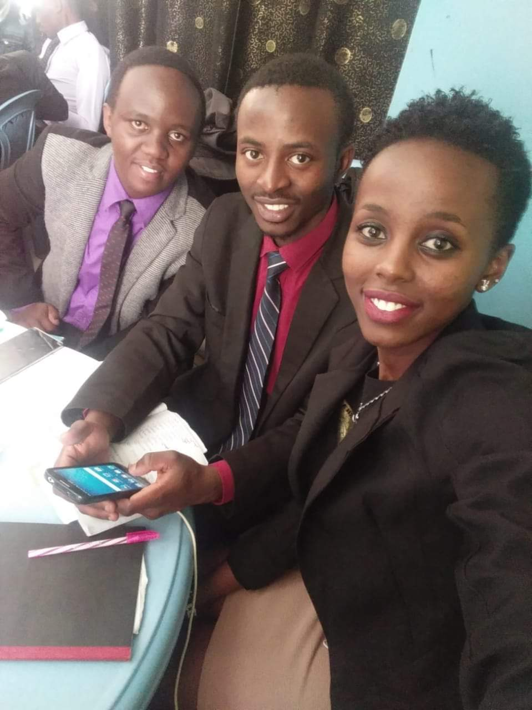
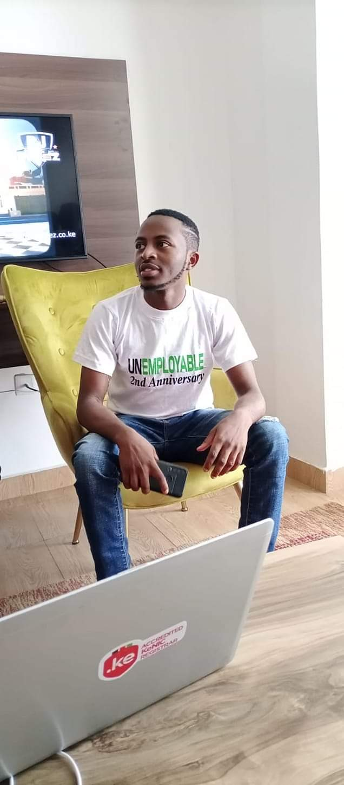
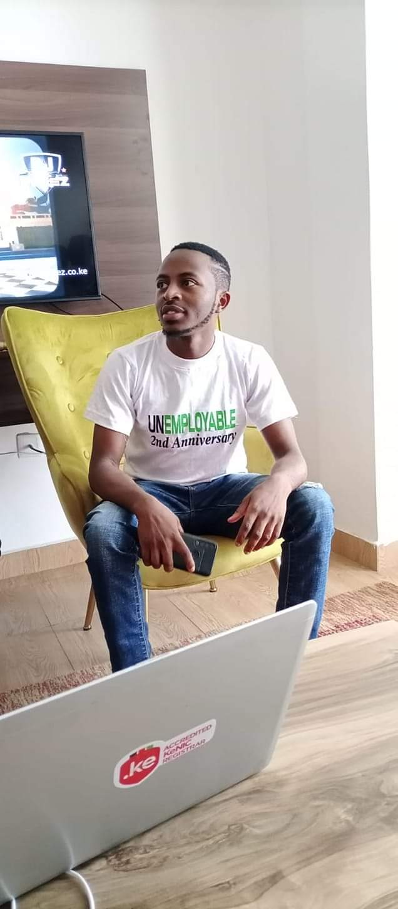
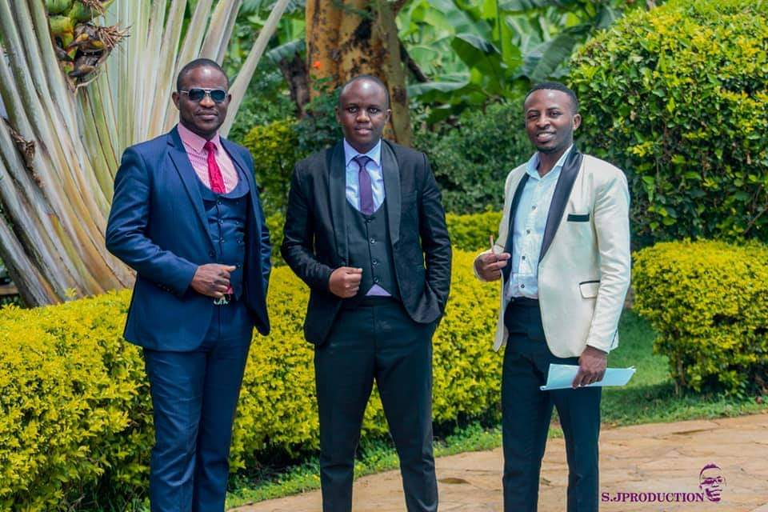
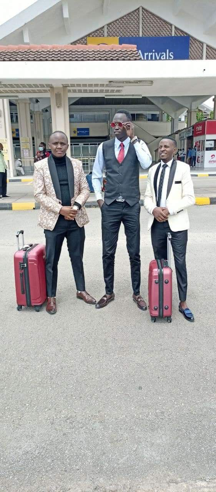
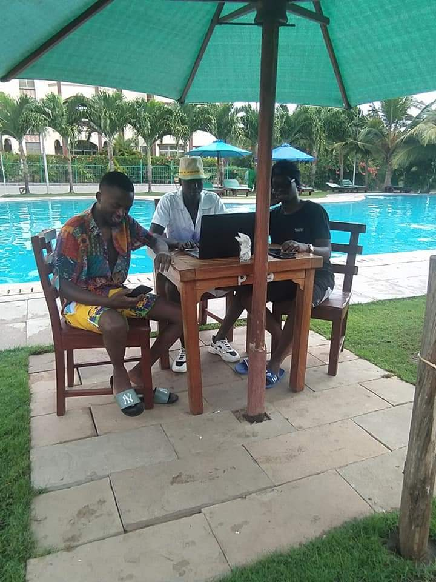
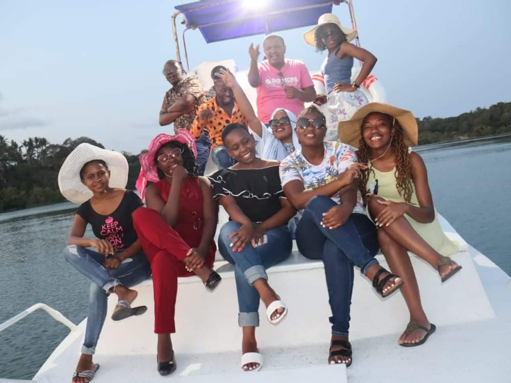
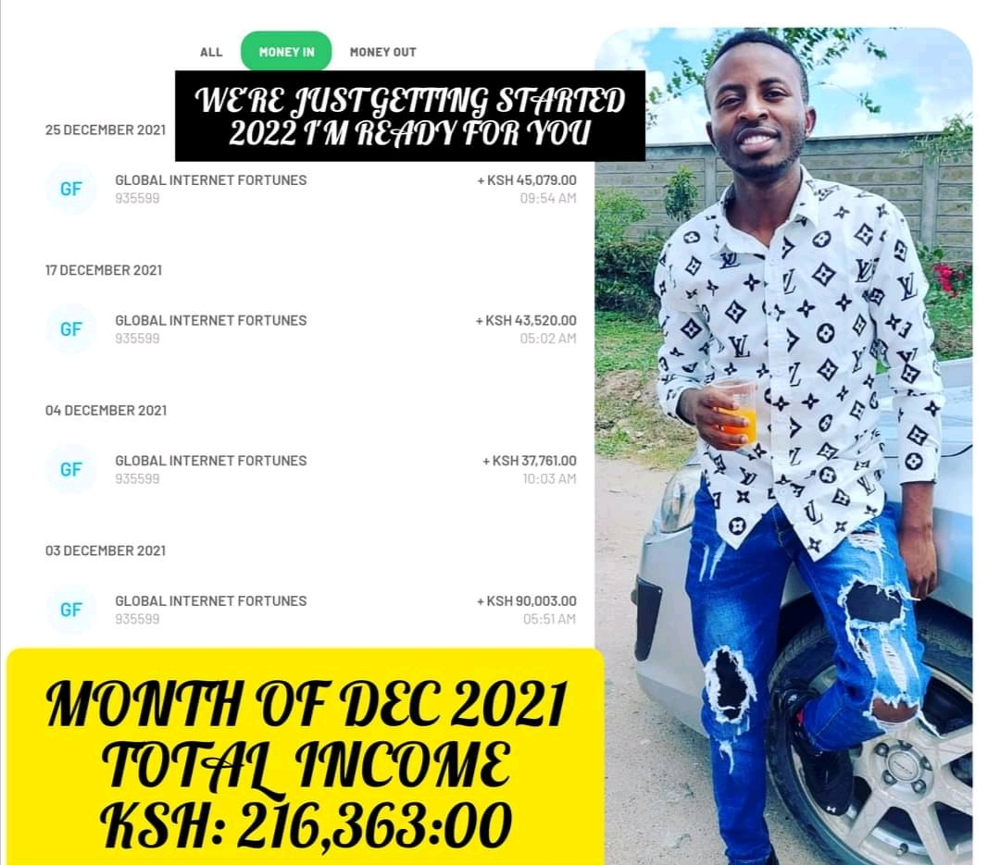
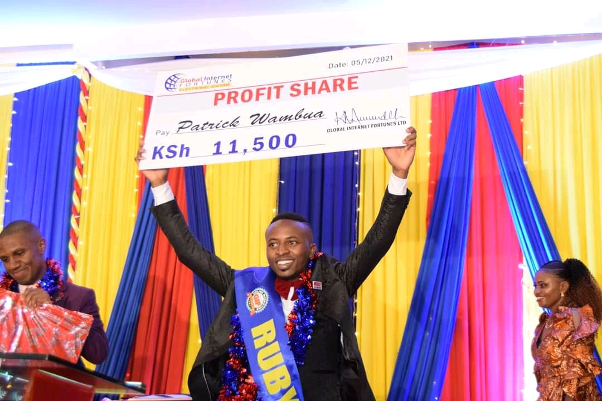

I WORKED AS A SONKO RESCUE TEAM 3YRS AGO ..NOW I OWN A BRAND NEW SUBARU COURSEY OF ONLINE WORK
Today We Feature my business partner Mr Patrick Wambua a Very Hard Working Young man
and an Agent of Global Internet Fortunes – (GIF).
COACH MWENDE & PATRICK WAMBUA
Here is What Patrick has to Say about his Succcess Journey with GIF.100% focus,
Passion/loving what you do, self discipline
coupled up with absolute Believe are crucial ingredients of my success in GLOBAL INTERNET FORTUNES.

When I was very new in the business
I joined GIF as a student. I worked part time then later switched to full
time…. before joining the GIF business I had tried many ways of making money.
I worked with SONKO RESCUE TEAM during holidays just raise money to cater for my bills and
for sure I didn’t see myself achieving much.. but currently, with this amazing platform, I can
confidently say that
it is the right vehicle for my dreams. That’s why I chose to do this FULL Time.
 This how I started off the business from the bottom
Straight to the point…… Seeing my family smile and changing the situation of the entire
family background has been and always will be one of my biggest and major DREAM since
I was young… Raised In NAIROBI, EASTLANDs area… in a family of 5, as the first born…
We can all agree life is never easy….. Expecially when your guardian isn’t
financially STABLE, and everything is a struggle. But do I say , GIF has made
it possible for me…. ATLEAST today as we speak… Apart from the money I’m making…. My
Mum and siblings (2 sisters and 2 brothers) are living a comfortable life… THIS IS
A GAME Changer. Started with zero skills, zero experience, zero money. BUT WITH THE
CORRECT BUSINESS MINDSET. I decided to be coachable, teachable, and available to
learn how the business works.

This how I started off the business from the bottom
Straight to the point…… Seeing my family smile and changing the situation of the entire
family background has been and always will be one of my biggest and major DREAM since
I was young… Raised In NAIROBI, EASTLANDs area… in a family of 5, as the first born…
We can all agree life is never easy….. Expecially when your guardian isn’t
financially STABLE, and everything is a struggle. But do I say , GIF has made
it possible for me…. ATLEAST today as we speak… Apart from the money I’m making…. My
Mum and siblings (2 sisters and 2 brothers) are living a comfortable life… THIS IS
A GAME Changer. Started with zero skills, zero experience, zero money. BUT WITH THE
CORRECT BUSINESS MINDSET. I decided to be coachable, teachable, and available to
learn how the business works.

With my Team leaders
And with the support of the leaders who were experienced and skilled…. That’s how
I learnt my way to become the person I am today.

The Amazing Team I work with
Thanks to My team, My Mentors in business, uplines, buddies and most importantly ,
The GIF Management for Coming up with this Wonderful System. Today I’m here to act as
a mirror.. to show that it’s possible because If I have done it anyone can do it even
better.

Traveling to Mombasa with my Team
TRAVELLING...and achieve my goals.
GIF PAYS ME EVERY WEEK which amounts to a 6 FIGURE INCOME monthly. In a Short 2 YEARS
GIF has enabled me to change my lifestyle.
Lot’s of TIME FREEDOM

The lifestyle that the business gives me its rare to get it in a JOB
Vacation time with the Team
At the Yatch having fun with the Team

This is what I tell you….. OUR SYSTEM IS PROVEN TO CONVERT EVERYONE INTO
GETTING RESULTS … BUT YOU ARE THE ONLY VARIABLE/DETERMINANT… decide to go for it.
GIF IS TRANSFORMING LIVES… AND IT’S EVIDENT FROM THE SUCCESS STORIES OF MANY OTHERS.
LOOKING FORWARD TO ACHIEVING MUCH MORE…..BELOW is my INCOME for the Month of
December 2021 paid via MPESA.

As we were celebrating our 9th anniversary as a company I was lucky enough
to get a profit share from the company. This was signed and awarded to me by our able CEO Mr Kimathi KAMUNDEH. I will always be grateful for this am much more I have achieved through global internet fortunes.
Am Looking Forward to Achieving much more with GIF. And after working smart, saving the money I earn from the company I have managed to gift myself a Christmas gift that I had worked for. My First Brand New Car Subaru G4 KDE 320X.
3 years down the line I have been able to achieve a lot, among them a brand new car , a Subaru G4 in the midst of a pandemic because you can never go wrong investing in the Internet .
People always wonder why I chose Online Work over my Supply chain management Career .
It’s Freedom For me, ie Time freedom.
I don’t want to be bossed around being told what to do from Monday to Saturday, January to December, years after years, instead, I want to be my own boss where I’ll choose my working hours and write my own cheque .
I hate being stuck in traffic especially on a rainy Monday morning.
I’m after financial freedom as well, I want to compress my working years, the goal is to retire young and richIf you need to take your life to the next financial level, ready to dare life itself and conquer, ready to achieve your dreams, own that dream home and car, live in your dream neighborhood and be able to live a limitless life then here is your golden opportunity.
As I’m sharing my story am not here to brag but to inspire someone out here who’s desperately looking for a job or they’re not happy with their work, that online work is also work. If we’re doing it you too can do it.The good thing is anyone can do it, either on a full-time or part-time basis (No previous experience required since professional training will be offered) You just need to create time for an orientation training to start working with us.
How I Can Help You?
So how is working with me different and what do you stand to gain from my interaction with you so that we are all winners?
Help You Get Started.
I’ll help incorporate you into the system and familiarize you with our network
marketing system to give you a smooth start.
I will Train You.
I’ll arm you with business skills on how to approach potential clients
and win them over as well as handling rejection.
Mentor You.
I’ll give you experiential guidance, walking with you every step of the way, on your
path to financial freedom.

<913>To return the favor, we are giving you a chance also to join our team and transform
your life in the shortest time you never thought of.
To Get started in this business, leave a comment Below of what has inspired you about
Mr. Patrick’s story and what lesson you have learnt as well. The admin will respond to
your comment immediately for quick assistance.
You can also reach Moreen Opati on Whatsapp +254 746 783389